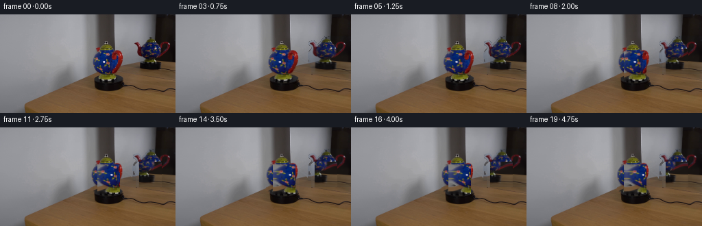
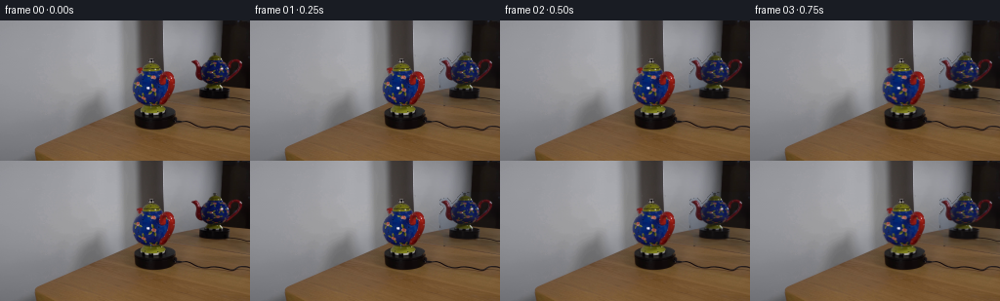
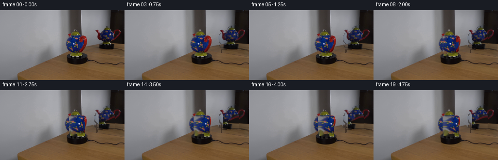
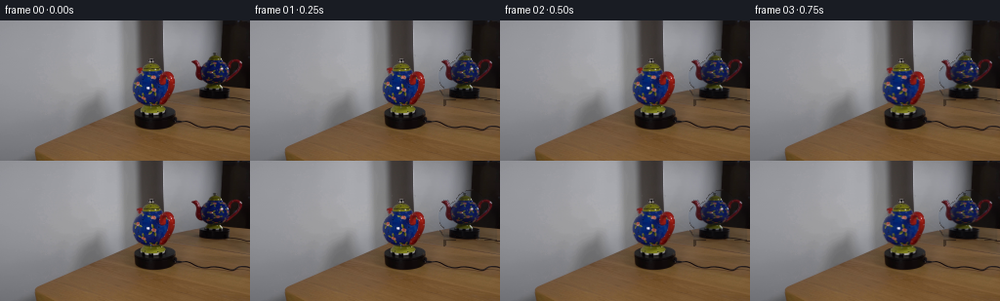
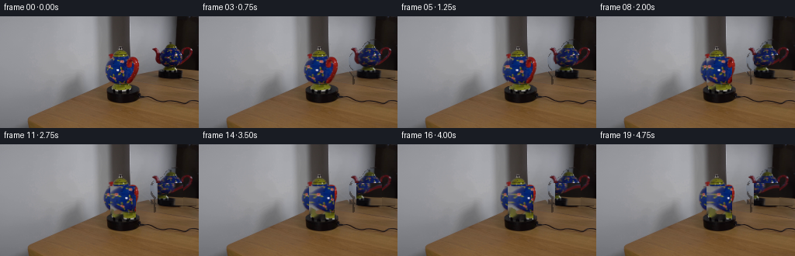

CODING AGENTS AS PIXEL WORLD MODELS
traex/DeepSeek-V4.1-Flash · 0121
点击播放 · 原生 RGB 像素
逐轮保存的候选
回放视频、检查图与代码变化。
每份候选均可单独播放。实际图片检查记录在下方工具轨迹中。
候选 01播放与检查图
点击播放 · 原生 RGB 像素


展开代码变化
--- 上一保存版本
+++ 本次保存版本
@@ -0,0 +1,241 @@
+from pathlib import Path
+
+import cv2
+import numpy as np
+from PIL import Image
+
+import artifact_io
+
+
+ROOT = Path(__file__).resolve().parent
+WIDTH, HEIGHT = 256, 144
+FRAME_COUNT, FPS = 20, 4
+
+
+def _ellipse(mask, center, axes, value=255):
+ cv2.ellipse(mask, center, axes, 0, 0, 360, value, -1, cv2.LINE_AA)
+
+
+def _polygon(mask, points, value=255):
+ cv2.fillPoly(mask, [np.asarray(points, np.int32)], value, cv2.LINE_AA)
+
+
+def _feather(mask, sigma=0.65):
+ alpha = cv2.GaussianBlur(mask.astype(np.float32) / 255.0, (0, 0), sigma)
+ return np.clip(alpha, 0.0, 1.0)
+
+
+def build_masks(image):
+ """Approximate the photographic teapot and its reflection as soft sprites."""
+ h, w = image.shape[:2]
+ rgb = image.astype(np.int16)
+ r, g, b = rgb[:, :, 0], rgb[:, :, 1], rgb[:, :, 2]
+ hi = rgb.max(axis=2)
+ lo = rgb.min(axis=2)
+ saturated = (hi - lo) > 34
+ dark = hi < 72
+ colorful = saturated | dark
+
+ pot = np.zeros((h, w), np.uint8)
+ _ellipse(pot, (158, 70), (22, 19))
+ _ellipse(pot, (158, 48), (11, 8))
+ _ellipse(pot, (158, 41), (5, 4))
+ _polygon(pot, [(146, 84), (171, 84), (175, 91), (170, 95), (148, 95), (143, 91)])
+ _polygon(pot, [(174, 65), (182, 67), (191, 73), (196, 82), (191, 87),
+ (182, 86), (177, 79), (172, 74)])
+
+ handle_outer = np.zeros((h, w), np.uint8)
+ handle_inner = np.zeros((h, w), np.uint8)
+ _ellipse(handle_outer, (141, 68), (7, 13))
+ _ellipse(handle_inner, (143, 68), (3, 9))
+ pot |= handle_outer & colorful.astype(np.uint8) * 255
+ pot &= ~(handle_inner & ~colorful.astype(np.uint8) * 255)
+
+ # Keep the colored photographic detail while rejecting the neutral wall.
+ local_color = np.zeros_like(pot)
+ local_color[36:90, 133:197] = colorful[36:90, 133:197].astype(np.uint8) * 255
+ local_color[86:96, 143:176] = 0
+ pot = cv2.bitwise_or(pot, local_color)
+ pot = cv2.morphologyEx(pot, cv2.MORPH_CLOSE, np.ones((3, 3), np.uint8))
+ pot = cv2.morphologyEx(pot, cv2.MORPH_OPEN, np.ones((2, 2), np.uint8))
+
+ reflection = np.zeros((h, w), np.uint8)
+ _ellipse(reflection, (226, 62), (25, 17))
+ _ellipse(reflection, (226, 45), (11, 8))
+ _ellipse(reflection, (226, 39), (4, 4))
+ _polygon(reflection, [(208, 55), (201, 51), (195, 58), (198, 68),
+ (205, 72), (213, 69)])
+ _polygon(reflection, [(241, 45), (248, 42), (253, 51), (252, 66),
+ (246, 72), (240, 65)])
+ refl_color = np.zeros_like(reflection)
+ refl_color[34:85, 194:255] = ((hi[34:85, 194:255] - lo[34:85, 194:255] > 18)
+ | (hi[34:85, 194:255] < 66)).astype(np.uint8) * 255
+ reflection = cv2.bitwise_or(reflection, refl_color)
+ reflection = cv2.morphologyEx(reflection, cv2.MORPH_CLOSE, np.ones((3, 3), np.uint8))
+
+ return pot, reflection
+
+
+def build_background(image, pot_mask, reflection_mask):
+ """Remove the moving subjects, leaving a stable plate for the locked-off shot."""
+ removal = cv2.bitwise_or(pot_mask, reflection_mask)
+ removal = cv2.dilate(removal, np.ones((5, 5), np.uint8), iterations=1)
+ # Keep the pedestal and the room's hard architectural edges intact.
+ removal[97:, :] = 0
+ plate = cv2.inpaint(cv2.cvtColor(image, cv2.COLOR_RGB2BGR), removal, 5,
+ cv2.INPAINT_TELEA)
+ plate = cv2.cvtColor(plate, cv2.COLOR_BGR2RGB)
+
+ # Inpainting can leave a slightly milky patch in the mirror. Restore the
+ # surrounding mirror tone in regions not touched by the reflected sprite.
+ mirror_zone = np.zeros_like(removal)
+ mirror_zone[30:88, 194:256] = removal[30:88, 194:256]
+ clean_zone = (mirror_zone > 0) & (reflection_mask == 0)
+ if np.any(clean_zone):
+ base = np.median(image[31:84, 246:255].reshape(-1, 3), axis=0)
+ plate[clean_zone] = (0.55 * plate[clean_zone] + 0.45 * base).astype(np.uint8)
+ return plate
+
+
+def _bilinear_sample(image, x, y):
+ """Sample a float RGB array at pixel-center coordinates."""
+ h, w = image.shape[:2]
+ x = np.clip(x, 0, w - 1.001)
+ y = np.clip(y, 0, h - 1.001)
+ x0 = np.floor(x).astype(np.int32)
+ y0 = np.floor(y).astype(np.int32)
+ x1 = np.minimum(x0 + 1, w - 1)
+ y1 = np.minimum(y0 + 1, h - 1)
+ fx = (x - x0)[..., None]
+ fy = (y - y0)[..., None]
+ top = image[y0, x0] * (1.0 - fx) + image[y0, x1] * fx
+ bottom = image[y1, x0] * (1.0 - fx) + image[y1, x1] * fx
+ return top * (1.0 - fy) + bottom * fy
+
+
+def warp_teapot(rgba, theta, reflected=False):
+ """
+ Rotate a photographed teapot about its vertical axis.
+
+ The body is remapped through a cylindrical longitude, so painted areas
+ travel across the ceramic surface instead of merely sliding as a flat card.
+ The handle and spout receive a smaller perspective compression at the rim.
+ """
+ h, w = rgba.shape[:2]
+ yy, xx = np.mgrid[0:h, 0:w].astype(np.float32)
+ cx, cy = 26.0, 35.0
+ rx, ry = 21.5, 18.0
+ angle = -theta if reflected else theta
+ s = np.sin(angle)
+ c = np.cos(angle)
+
+ dx = xx - cx
+ dy = yy - cy
+ body_half = rx * (0.985 + 0.015 * c)
+
+ phi = np.arcsin(np.clip(dx / body_half, -1.0, 1.0))
+ u = cx + rx * np.sin(phi - angle)
+ v = cy + dy * (1.0 - 0.018 * s)
+
+ # The outer appendages turn with less horizontal foreshortening than the
+ # central ceramic body. Their outward displacement makes the turn readable.
+ left_side = dx < -body_half * 0.78
+ right_side = dx > body_half * 0.78
+ if reflected:
+ left_side, right_side = right_side, left_side
+
+ handle_scale = 1.0 + 0.10 * np.sin(theta)
+ spout_scale = 1.0 - 0.16 * np.sin(theta)
+ handle_u = cx + (dx + 1.8 * np.sin(theta)) / handle_scale
+ spout_u = cx + (dx - 2.0 * np.sin(theta)) / spout_scale
+ u = np.where(left_side, handle_u, u)
+ u = np.where(right_side, spout_u, u)
+
+ lid = yy < 19.0
+ u = np.where(lid, cx + dx / (1.0 - 0.018 * np.sin(theta)), u)
+ v = np.where(lid, cy + dy / (1.0 + 0.010 * np.sin(theta)), v)
+
+ rgb = _bilinear_sample(rgba[:, :, :3], u, v)
+ alpha = _bilinear_sample(rgba[:, :, 3:4], u, v)[..., 0]
+
+ # Mild relighting prevents the baked highlight from appearing to slide with
+ # the ornament. The identity frame remains effectively unchanged.
+ if abs(theta) > 1e-5:
+ z_dest = np.sqrt(np.clip(1.0 - (dx / (rx + 1e-5)) ** 2, 0.0, 1.0))
+ z_src = np.sqrt(np.clip(1.0 - ((u - cx) / (rx + 1e-5)) ** 2, 0.0, 1.0))
+ shade = (0.88 + 0.12 * z_dest) / (0.88 + 0.12 * z_src + 1e-5)
+ shade = np.clip(shade, 0.84, 1.17)
+ rgb *= shade[..., None]
+
+ # Antialiased sides and a tiny amount of air absorption at grazing angles.
+ rim = np.clip(1.0 - np.abs(dx) / (body_half + 1.5), 0.0, 1.0)
+ alpha *= 0.985 + 0.015 * rim
+ return np.dstack([np.clip(rgb, 0, 255), np.clip(alpha * 255.0, 0, 255)])
+
+
+def composite(dst, sprite, x0, y0, gain=1.0):
+ h, w = sprite.shape[:2]
+ x1, y1 = min(x0 + w, dst.shape[1]), min(y0 + h, dst.shape[0])
+ if x1 <= x0 or y1 <= y0:
+ return
+ sw = sprite[:y1 - y0, :x1 - x0]
+ a = (sw[:, :, 3:4] / 255.0) * gain
+ region = dst[y0:y1, x0:x1].astype(np.float32)
+ dst[y0:y1, x0:x1] = np.clip(
+ sw[:, :, :3] * a + region * (1.0 - a), 0, 255
+ ).astype(np.uint8)
+
+
+def make_sprite(image, mask, box, feather_sigma=0.65):
+ x0, y0, x1, y1 = box
+ crop = image[y0:y1, x0:x1].astype(np.float32)
+ alpha = _feather(mask[y0:y1, x0:x1], feather_sigma) * 255.0
+ return np.dstack([crop, alpha])
+
+
+def generate():
+ image = np.asarray(Image.open(ROOT / "first_frame.png").convert("RGB"), np.uint8)
+ assert image.shape == (HEIGHT, WIDTH, 3)
+ pot_mask, reflection_mask = build_masks(image)
+ background = build_background(image, pot_mask, reflection_mask)
+
+ pot_box = (132, 35, 198, 97)
+ refl_box = (193, 31, 256, 89)
+ pot_sprite = make_sprite(image, pot_mask, pot_box)
+ refl_sprite = make_sprite(image, reflection_mask, refl_box, 0.85)
+
+ frames = np.empty((FRAME_COUNT, HEIGHT, WIDTH, 3), np.uint8)
+ frames[0] = image
+
+ for i in range(1, FRAME_COUNT):
+ # Smooth acceleration and deceleration over a five-second turntable.
+ u = (i - 1) / (FRAME_COUNT - 2)
+ eased = u * u * (3.0 - 2.0 * u)
+ theta = np.deg2rad(52.0) * eased
+
+ canvas = background.copy()
+ refl = warp_teapot(refl_sprite, theta, reflected=True)
+ # The reflection sits in a darker, cooler mirror surface.
+ refl[:, :, :3] = np.clip(
+ refl[:, :, :3] * np.array([0.91, 0.94, 0.98], np.float32)
+ + np.array([2.0, 3.0, 4.0], np.float32), 0, 255
+ )
+ composite(canvas, refl, refl_box[0], refl_box[1], 0.94)
+
+ pot = warp_teapot(pot_sprite, theta, reflected=False)
+ composite(canvas, pot, pot_box[0], pot_box[1], 1.0)
+
+ # A restrained 1-pixel temporal softening keeps the remap from
+ # introducing high-frequency crawl on the 256x144 raster.
+ if i > 1:
+ soft = cv2.GaussianBlur(canvas, (3, 3), 0.42)
+ canvas = np.clip(0.82 * canvas.astype(np.float32)
+ + 0.18 * soft.astype(np.float32), 0, 255).astype(np.uint8)
+ frames[i] = canvas
+
+ artifact_io.save(frames, ROOT)
+ return frames
+
+
+if __name__ == "__main__":
+ generate()
候选 02播放与检查图
点击播放 · 原生 RGB 像素


展开代码变化
--- 上一保存版本
+++ 本次保存版本
@@ -56,22 +56,30 @@
local_color[36:90, 133:197] = colorful[36:90, 133:197].astype(np.uint8) * 255
local_color[86:96, 143:176] = 0
pot = cv2.bitwise_or(pot, local_color)
+ # Do not extend the ceramic body into the exposed platform surface.
+ pot[87:, :149] = 0
+ pot[88:, 175:] = 0
+ pot[95:, :] = 0
pot = cv2.morphologyEx(pot, cv2.MORPH_CLOSE, np.ones((3, 3), np.uint8))
pot = cv2.morphologyEx(pot, cv2.MORPH_OPEN, np.ones((2, 2), np.uint8))
reflection = np.zeros((h, w), np.uint8)
- _ellipse(reflection, (226, 62), (25, 17))
- _ellipse(reflection, (226, 45), (11, 8))
- _ellipse(reflection, (226, 39), (4, 4))
- _polygon(reflection, [(208, 55), (201, 51), (195, 58), (198, 68),
- (205, 72), (213, 69)])
- _polygon(reflection, [(241, 45), (248, 42), (253, 51), (252, 66),
- (246, 72), (240, 65)])
+ # The reflected pot is smaller and seen through a much darker mirror.
+ # Its silhouette is therefore defined geometrically rather than from the
+ # mirror's own high-contrast texture.
+ _ellipse(reflection, (225, 58), (24, 17))
+ _ellipse(reflection, (225, 42), (11, 8))
+ _ellipse(reflection, (225, 36), (4, 4))
+ _polygon(reflection, [(207, 53), (201, 48), (195, 55), (198, 64),
+ (205, 68), (212, 65)])
+ _polygon(reflection, [(240, 41), (247, 39), (252, 48), (251, 63),
+ (245, 68), (239, 61)])
refl_color = np.zeros_like(reflection)
- refl_color[34:85, 194:255] = ((hi[34:85, 194:255] - lo[34:85, 194:255] > 18)
- | (hi[34:85, 194:255] < 66)).astype(np.uint8) * 255
+ refl_color[34:80, 200:251] = ((hi[34:80, 200:251] - lo[34:80, 200:251] > 28)
+ & (hi[34:80, 200:251] < 112)).astype(np.uint8) * 255
reflection = cv2.bitwise_or(reflection, refl_color)
reflection = cv2.morphologyEx(reflection, cv2.MORPH_CLOSE, np.ones((3, 3), np.uint8))
+ reflection[80:, :] = 0
return pot, reflection
@@ -200,7 +208,7 @@
background = build_background(image, pot_mask, reflection_mask)
pot_box = (132, 35, 198, 97)
- refl_box = (193, 31, 256, 89)
+ refl_box = (193, 31, 256, 81)
pot_sprite = make_sprite(image, pot_mask, pot_box)
refl_sprite = make_sprite(image, reflection_mask, refl_box, 0.85)
候选 03播放与检查图
点击播放 · 原生 RGB 像素

展开代码变化
--- 上一保存版本
+++ 本次保存版本
@@ -79,7 +79,7 @@
& (hi[34:80, 200:251] < 112)).astype(np.uint8) * 255
reflection = cv2.bitwise_or(reflection, refl_color)
reflection = cv2.morphologyEx(reflection, cv2.MORPH_CLOSE, np.ones((3, 3), np.uint8))
- reflection[80:, :] = 0
+ reflection[78:, :] = 0
return pot, reflection
@@ -208,7 +208,7 @@
background = build_background(image, pot_mask, reflection_mask)
pot_box = (132, 35, 198, 97)
- refl_box = (193, 31, 256, 81)
+ refl_box = (193, 31, 256, 79)
pot_sprite = make_sprite(image, pot_mask, pot_box)
refl_sprite = make_sprite(image, reflection_mask, refl_box, 0.85)
可观测工具轨迹
实际执行的命令与返回图片。
命令 1exit 0
/bin/bash -c "pwd && rg --files -g 'prompt.txt' -g 'GENERATION_RULES.md' -g 'first_frame.png' -g '"'!**/.git/**'"'"
命令 2exit 0
/bin/bash -c "sed -n '1,240p' prompt.txt"
命令 3exit 0
/bin/bash -c "sed -n '1,260p' GENERATION_RULES.md"
命令 4exit 0
/bin/bash -c "ls -la && find . -maxdepth 2 -type f -printf '%p %s bytes\\n' | sort"
命令 5exit 0
/bin/bash -c "python - <<'PY'
from PIL import Image
import numpy as np
im=Image.open('first_frame.png').convert('RGB')
a=np.array(im)
print(im.size, im.mode, a.dtype, a.shape)
print('min/max',a.min((0,1)),a.max((0,1)))
print('mean/std',a.mean((0,1)),a.std((0,1)))
# coarse 16x9 block means
for by in range(0,144,16):
row=[]
for bx in range(0,256,16):
c=a[by:by+16,bx:bx+16].mean((0,1))
row.append('#%02x%02x%02x'%tuple(c.astype(int)))
print(' '.join(row))
PY"命令 6exit 0
/bin/bash -c "sed -n '1,260p' artifact_io.py && sed -n '1,220p' player_template.html"
命令 7exit 0
/bin/bash -c "python - <<'PY' mods=['cv2','scipy','skimage','numpy','PIL','imageio','matplotlib'] for m in mods: try: x=__import__(m); print(m, getattr(x,'__version__','ok')) except Exception as e: print(m,'NO',e) PY"
命令 8exit 0
/bin/bash -c "python - <<'PY'
import cv2, numpy as np
im=cv2.imread('first_frame.png')[:,:,::-1]
# kmeans colors
x=im.reshape(-1,3).astype(np.float32)
crit=(cv2.TERM_CRITERIA_EPS+cv2.TERM_CRITERIA_MAX_ITER,50,.5)
_,lab,cen=cv2.kmeans(x,12,None,crit,5,cv2.KMEANS_PP_CENTERS)
lab=lab.reshape(144,256)
for i,c in sorted(enumerate(cen), key=lambda z:-np.sum(lab==z[0])):
print(i, 'rgb', c.astype(int), 'pct', round((lab==i).mean()*100,1))
# coarse 8x8 map based on cluster ids
chars='0123456789AB'
print('\\ncluster map 2x2 blocks:')
for y in range(0,144,4):
s=''
for x in range(0,256,4):
vals=lab[y:y+4,x:x+4]
s+=chars[np.bincount(vals.ravel(),minlength=12).argmax()]
print(s)
PY"命令 9exit 0
/bin/bash -c "python - <<'PY'
import cv2, numpy as np
im=cv2.imread('first_frame.png')
g=cv2.cvtColor(im,cv2.COLOR_BGR2GRAY)
e=cv2.Canny(g,30,80)
# hough lines
lines=cv2.HoughLinesP(e,1,np.pi/180,20,minLineLength=15,maxLineGap=3)
print('lines')
for l in (lines[:,0] if lines is not None else []):
x1,y1,x2,y2=l; L=np.hypot(x2-x1,y2-y1); ang=np.degrees(np.arctan2(y2-y1,x2-x1))
if L>25: print(tuple(l),round(L,1),round(ang,1))
# edge map 2x2
print('\\nedge map 2x2')
for y in range(0,144,2):
print(''.join('#' if e[y:y+2,x:x+2].mean()>20 else '+' if e[y:y+2,x:x+2].mean()>5 else ' ' for x in range(0,256,2)))
PY"命令 10exit 1
/bin/bash -c "python - <<'PY'
import cv2, numpy as np
im=cv2.imread('first_frame.png')
# find dark component masks
hsv=cv2.cvtColor(im,cv2.COLOR_BGR2HSV)
for name,m in [('dark',np.all(im<70,axis=2)),('blue', (im[:,:,0]>im[:,:,2]*1.4)&(im[:,:,0]>im[:,:,1]*1.2)),('red',(im[:,:,2]>im[:,:,1]*1.8)&(im[:,:,2]>im[:,:,0]*1.5))]:
n,lab,stats,cents=cv2.connectedComponentsWithStats(m.astype(np.uint8),8)
print('\\n',name)
for s,c in sorted(zip(stats[1:],cents[1:]),key=lambda z:-z[0,4])[:15]: print('x y w h area',s.tolist(),'cent',c.round(1))
# print each row color changes compressed
print('\\nRow run colors every 4px x')
for y in [10,20,30,40,50,60,70,75,80,85,90,95,100,110,120,130,140]:
s=[]
for x in range(0,256,4):
c=np.median(im[max(0,y-1):y+2,x:x+4],axis=(0,1))[::-1].astype(int)
s.append('#%02x%02x%02x'%tuple(c))
print(y,' '.join(s))
PY"命令 11exit 0
/bin/bash -c "python - <<'PY'
import cv2, numpy as np
im=cv2.imread('first_frame.png')
for name,m in [('dark',np.all(im<70,axis=2)),('blue', (im[:,:,0]>im[:,:,2]*1.4)&(im[:,:,0]>im[:,:,1]*1.2)),('red',(im[:,:,2]>im[:,:,1]*1.8)&(im[:,:,2]>im[:,:,0]*1.5))]:
n,lab,stats,cents=cv2.connectedComponentsWithStats(m.astype(np.uint8),8)
print('\\n',name)
items=sorted([(stats[i],cents[i]) for i in range(1,n)],key=lambda z:-z[0][4])
for s,c in items[:15]: print('x y w h area',s.tolist(),'cent',c.round(1))
print('\\nRow colors every 8px')
for y in [10,20,30,40,50,60,70,75,80,85,90,95,100,110,120,130,140]:
s=[]
for x in range(0,256,8):
c=np.median(im[max(0,y-1):y+2,x:x+8],axis=(0,1))[::-1].astype(int)
s.append('#%02x%02x%02x'%tuple(c))
print(y,' '.join(s))
PY"命令 12exit 0
/bin/bash -c "python - <<'PY'
from PIL import Image
import numpy as np
im=np.array(Image.open('first_frame.png').convert('RGB'))
# Render six crops enlarged into one inspection image using nearest and lanczos side by side
regions=[(120,35,190,95),(185,25,256,90),(130,85,256,120),(0,0,144,90),(0,85,140,144),(190,85,256,144)]
W=4*256; H=2*(144+22)
out=Image.new('RGB',(W,H),(25,28,35))
from PIL import ImageDraw
D=ImageDraw.Draw(out)
for i,r in enumerate(regions):
x=(i%4)*256;y=(i//4)*(144+22)
D.text((x+5,y+3),str(r),fill='white')
crop=Image.fromarray(im[r[1]:r[3],r[0]:r[2]])
crop.thumbnail((256,144),Image.Resampling.LANCZOS)
out.paste(crop,(x+(256-crop.width)//2,y+22+(144-crop.height)//2))
out.save('.tmp/crops.png')
PY"命令 13exit 0
/bin/bash -c "python - <<'PY'
import cv2, numpy as np
im=cv2.imread('first_frame.png')[:,:,::-1]
# print grayscale ascii at 2x2, focus whole
for y in range(0,144,2):
s=''
for x in range(0,256,2):
c=im[y:y+2,x:x+2].mean((0,1)); g=c.mean()
sat=c.max()-c.min()
if sat>45 and c[2]>c[0]*1.5: ch='R'
elif sat>35 and c[2]>c[0]*1.2: ch='B'
elif g<25: ch=' '
elif g<50: ch='.'
elif g<75: ch=':'
elif g<100: ch='-'
elif g<125: ch='='
elif g<150: ch='+'
elif g<175: ch='*'
elif g<200: ch='#'
else: ch='@'
s+=ch
print(f'{y:03d} {s}')
PY"命令 14exit 0
/bin/bash -c "python - <<'PY'
import cv2, numpy as np
im=cv2.imread('first_frame.png')[:,:,::-1]
# detect object silhouette based on deviation from mirror/background using gradients
# Print color patch grid around pot at 2px with letters nearest palette
pts=[(130,35),(145,35),(160,35),(175,35),(190,35),(205,35),(220,35),(235,35),(250,35),
(130,45),(145,45),(160,45),(175,45),(190,45),(205,45),(220,45),(235,45),(250,45),
(130,55),(145,55),(160,55),(175,55),(190,55),(205,55),(220,55),(235,55),(250,55),
(130,65),(145,65),(160,65),(175,65),(190,65),(205,65),(220,65),(235,65),(250,65),
(130,75),(145,75),(160,75),(175,75),(190,75),(205,75),(220,75),(235,75),(250,75),
(130,85),(145,85),(160,85),(175,85),(190,85),(205,85),(220,85),(235,85),(250,85)]
for y in range(35,91,5):
s=[]
for x in range(130,256,5):
c=im[y-1:y+2,x-2:x+3].mean((0,1)).astype(int)
s.append('%02x%02x%02x'%tuple(c))
print(y,' '.join(s))
PY"命令 15exit 0
/bin/bash -c "python - <<'PY'
import cv2, numpy as np
im=cv2.imread('first_frame.png')
g=cv2.cvtColor(im,cv2.COLOR_BGR2GRAY)
e=cv2.Canny(g,18,55)
# stronger local contrast edges
x0,x1,y0,y1=130,186,34,93
print(' '+''.join(str((x//10)%10) for x in range(x0,x1)))
print(' '+''.join(str(x%10) for x in range(x0,x1)))
for y in range(y0,y1):
s=''
for x in range(x0,x1):
b,gc,r=im[y,x]
sat=int(max(b,gc,r))-int(min(b,gc,r))
if e[y,x]: ch='#'
elif sat>60 and b>r*1.35 and b>gc*1.2: ch='B'
elif sat>60 and r>b*1.45 and r>gc*1.2: ch='R'
elif max(b,gc,r)<45: ch=' '
elif max(b,gc,r)<70: ch='.'
elif max(b,gc,r)<95: ch=':'
elif max(b,gc,r)<120: ch='-'
elif max(b,gc,r)<145: ch='='
elif max(b,gc,r)<175: ch='+'
elif max(b,gc,r)<205: ch='*'
else: ch='@'
s+=ch
print(f'{y:03d} {s}')
PY"命令 16exit 0
/bin/bash -c "python - <<'PY'
from PIL import Image
import numpy as np
im=np.array(Image.open('first_frame.png').convert('RGB')).astype(int)
print(' '+''.join(str((x//10)%10) for x in range(128,190)))
print(' '+''.join(str(x%10) for x in range(128,190)))
for y in range(34,94):
s=''
for x in range(128,190):
r,g,b=im[y,x]; mx=max(r,g,b); mn=min(r,g,b); sat=mx-mn
if sat>55 and b>r*1.35 and b>g*1.15: ch='B'
elif sat>55 and r>b*1.45 and r>g*1.2: ch='R'
elif mx>210: ch='@'
elif mx>180: ch='*'
elif mx>155: ch='+'
elif mx>130: ch='='
elif mx>105: ch='-'
elif mx>80: ch=':'
elif mx>55: ch='.'
else: ch=' '
# mark high saturation lower brightness as lowercase
s+=ch
print(f'{y:03d} {s}')
PY"命令 17exit 0
/bin/bash -c "python - <<'PY'
import cv2, numpy as np
im=cv2.imread('first_frame.png')
# use segmentation via color distance from likely bg/mirror, threshold; view masks stats and contours
for t in [15,20,25,30,35,40]:
# pot region roughly x130-185 y38-94, local center background etc
roi=im[34:95,128:190]
# edges
e=cv2.Canny(cv2.cvtColor(roi,cv2.COLOR_BGR2GRAY),20,60)
n,lab,stats,cents=cv2.connectedComponentsWithStats((e>0).astype(np.uint8),8)
print('t',t,'components',n)
# contour enclosing object? threshold color saturation/dark/bright
print('saturation pixels',((roi.max(2)-roi.min(2))>50).sum())
PY"命令 18exit 0
/bin/bash -c "python - <<'PY'
import cv2, numpy as np
im=cv2.imread('first_frame.png')
# mirror pot region 198:257 x 35:92: inspect edge map
x0,x1,y0,y1=190,256,34,94
roi=im[y0:y1,x0:x1]
e=cv2.Canny(cv2.cvtColor(roi,cv2.COLOR_BGR2GRAY),15,45)
print(' '+''.join(str((x//10)%10) for x in range(x0,x1)))
print(' '+''.join(str(x%10) for x in range(x0,x1)))
for y in range(y0,y1):
s=''
for x in range(x0,x1):
b,g,r=im[y,x]; mx=max(b,g,r);mn=min(b,g,r); sat=mx-mn
if e[y-y0,x-x0]: ch='#'
elif sat>55 and b>r*1.35 and b>g*1.15: ch='B'
elif sat>55 and r>b*1.45 and r>g*1.2: ch='R'
elif mx>210: ch='@'
elif mx>180: ch='*'
elif mx>155: ch='+'
elif mx>130: ch='='
elif mx>105: ch='-'
elif mx>80: ch=':'
elif mx>55: ch='.'
else: ch=' '
s+=ch
print(f'{y:03d} {s}')
PY"命令 19exit 1
/bin/bash -c "python - <<'PY'
import cv2, numpy as np
im=cv2.imread('first_frame.png')
def seg(rect):
x,y,w,h=rect
roi=im[y:y+h,x:x+w]
mask=np.full((h,w),cv2.GC_BGD,np.uint8)
# sure bg border 3
mask[3:-3,3:-3]=cv2.GC_PR_BGD
# probable fg central core based saturation/dark/bright
b,g,r=roi[:,:,0].astype(int),roi[:,:,1].astype(int),roi[:,:,2].astype(int)
mx=np.maximum(np.maximum(b,g),r); mn=np.minimum(np.minimum(b,g),r)
sat=mx-mn
fg=(sat>38)|(mx<70)
# erode fg
fg=cv2.erode(fg.astype(np.uint8),np.ones((3,3),np.uint8))>0
mask[fg]=cv2.GC_PR_FGD
mask[6:-6,6:-6][fg[6:-6,6:-6]]=cv2.GC_FGD
bg,fgm=cv2.grabCut(roi,mask,None,np.zeros((1,65),np.float64),np.zeros((1,65),np.float64),5,cv2.GC_INIT_WITH_MASK)
out=np.isin(fgm,[cv2.GC_FGD,cv2.GC_PR_FGD]).astype(np.uint8)
return out
for name,rect in [('real',(128,34,58,60)),('mirror',(194,34,62,60))]:
m=seg(rect)
print(name,'area',m.sum(),'bbox',cv2.boundingRect(m))
x,y,w,h=rect
for yy in range(h):
print(''.join('#' if m[yy,xx] else ' ' for xx in range(w)))
PY"命令 20exit 0
/bin/bash -c "python - <<'PY'
import cv2, numpy as np
im=cv2.imread('first_frame.png')
def seg(rect):
x,y,w,h=rect
roi=im[y:y+h,x:x+w]
mask=np.full((h,w),cv2.GC_BGD,np.uint8)
mask[3:-3,3:-3]=cv2.GC_PR_BGD
b,g,r=roi[:,:,0].astype(int),roi[:,:,1].astype(int),roi[:,:,2].astype(int)
mx=np.maximum(np.maximum(b,g),r); mn=np.minimum(np.minimum(b,g),r)
sat=mx-mn
fg=(sat>38)|(mx<70)
fg=cv2.erode(fg.astype(np.uint8),np.ones((3,3),np.uint8))>0
mask[fg]=cv2.GC_PR_FGD
core=np.zeros_like(fg); core[6:-6,6:-6]=fg[6:-6,6:-6]
mask[core]=cv2.GC_FGD
cv2.grabCut(roi,mask,None,np.zeros((1,65),np.float64),np.zeros((1,65),np.float64),5,cv2.GC_INIT_WITH_MASK)
out=np.isin(mask,[cv2.GC_FGD,cv2.GC_PR_FGD]).astype(np.uint8)
return out
for name,rect in [('real',(128,34,58,60)),('mirror',(194,34,62,60))]:
m=seg(rect)
print(name,'area',m.sum(),'bbox',cv2.boundingRect(m))
for yy in range(m.shape[0]):
print(''.join('#' if m[yy,xx] else ' ' for xx in range(m.shape[1])))
PY"命令 21exit 0
/bin/bash -c "python - <<'PY'
import cv2,numpy as np
im=cv2.imread('first_frame.png')
# smooth background via median blur 31 then compare Lab
bg=cv2.medianBlur(im,31)
a=cv2.cvtColor(im,cv2.COLOR_BGR2LAB).astype(float); b=cv2.cvtColor(bg,cv2.COLOR_BGR2LAB).astype(float)
d=np.linalg.norm(a-b,axis=2)
# local gradient
g=cv2.magnitude(cv2.Sobel(cv2.cvtColor(im,cv2.COLOR_BGR2GRAY),cv2.CV_32F,1,0,ksize=3),cv2.Sobel(cv2.cvtColor(im,cv2.COLOR_BGR2GRAY),cv2.CV_32F,0,1,ksize=3))
x0,x1,y0,y1=125,192,32,98
print('DIFF threshold 20')
for y in range(y0,y1):
s=''
for x in range(x0,x1):
s += '#' if d[y,x]>30 else '+' if d[y,x]>18 else '.' if d[y,x]>10 else ' '
print(f'{y:03d} {s}')
print('\\nGRAD threshold 80')
for y in range(y0,y1):
s=''
for x in range(x0,x1):
s += '#' if g[y,x]>160 else '+' if g[y,x]>80 else '.' if g[y,x]>40 else ' '
print(f'{y:03d} {s}')
PY"命令 22exit 0
/bin/bash -c "python - <<'PY'
import cv2, numpy as np
im=cv2.imread('first_frame.png')[:,:,::-1]
for name,(x0,x1,y0,y1) in {'real':(125,195,30,100),'mirror':(190,256,30,100)}.items():
roi=im[y0:y1,x0:x1]
mx=roi.max(2).astype(int); mn=roi.min(2).astype(int); sat=mx-mn
print(name)
for t in [20,30,40,50,60]:
m=(sat>t).astype(np.uint8)
n,l,st,c=cv2.connectedComponentsWithStats(m,8)
items=sorted(st[1:],key=lambda s:-s[4])[:5]
print(' t',t,'area',m.sum(),'comps',[(s.tolist()) for s in items])
PY"命令 23exit 0
/bin/bash -c "python - <<'PY'
import cv2, numpy as np
im=cv2.imread('first_frame.png')[:,:,::-1]
# print row silhouette based saturation>30 in focused regions
for name,(x0,x1,y0,y1) in {'real':(128,190,36,96),'mirror':(194,256,36,96)}.items():
print('\\n'+name)
roi=im[y0:y1,x0:x1]; sat=roi.max(2)-roi.min(2); mx=roi.max(2)
for t in [20,30,40]:
print('T',t)
for yy in range(roi.shape[0]):
s=''.join('#' if sat[yy,xx]>t else ' ' for xx in range(roi.shape[1]))
# compress runs
runs=[];cur=s[0];start=0
for i,ch in enumerate(s[1:],1):
if ch"'!=cur:
if cur=='"'#': runs.append((start,i-1))
cur=ch;start=i
if cur=='#':runs.append((start,len(s)-1))
if runs: print(f'{y0+yy:3d}',runs)
PY"命令 24exit 0
/bin/bash -c "python - <<'PY'
import cv2, numpy as np
im=cv2.imread('first_frame.png')
# extract pot using manual polygon-ish mask from saturation & dark, inspect quality by making alpha comps
roi=im[34:97,126:191]
h,w=roi.shape[:2]
sat=roi.max(2).astype(int)-roi.min(2).astype(int)
mx=roi.max(2)
m=((sat>22)|(mx<70)).astype(np.uint8)
m=cv2.morphologyEx(m,cv2.MORPH_CLOSE,np.ones((5,5),np.uint8))
m=cv2.morphologyEx(m,cv2.MORPH_OPEN,np.ones((2,2),np.uint8))
n,l,st,c=cv2.connectedComponentsWithStats(m,8)
idx=1+np.argmax(st[1:,4]); m=(l==idx).astype(np.uint8)
# fill holes
ff=m.copy(); mask=np.zeros((h+2,w+2),np.uint8); cv2.floodFill(ff,mask,(0,0),1)
m=m|(1-ff)
# remove platform region y>=54 x>=55 likely
# create rgba enlarged
out=np.zeros((h,w,4),np.uint8);out[:,:,:3]=roi;out[:,:,3]=m*255
cv2.imwrite('.tmp/pot_alpha.png',cv2.resize(out,(w*5,h*5),interpolation=cv2.INTER_NEAREST))
print('bbox',cv2.boundingRect(m),'area',m.sum())
for yy in range(h): print(''.join('#' if m[yy,xx] else ' ' for xx in range(w)))
PY"命令 25exit 0
/bin/bash -c "python - <<'PY'
from PIL import Image
import numpy as np, cv2
im=np.array(Image.open('first_frame.png').convert('RGB')).astype(np.float32)
# manually locate pot by annotation expected from ASCII: x139..181 y44..93
# create transparent pot with a hand-designed alpha: body around x139..181, y44..90, handle around x138..143 y52..76
# Instead analyze segmentation against synthetic bg via inpainting? output crops at scale for user not needed.
# Print RGB values with cluster labels in main pot body to understand decoration.
x0,x1,y0,y1=136,184,42,94
roi=im[y0:y1,x0:x1].astype(int)
for y in range(0,roi.shape[0],2):
s=''
for x in range(0,roi.shape[1],2):
c=np.median(roi[y:y+2,x:x+2],axis=(0,1));r,g,b=c
if max(c)-min(c)>45 and b>r*1.4: ch='B'
elif max(c)-min(c)>45 and r>b*1.4: ch='R'
elif max(c)>190: ch='@'
elif max(c)>165: ch='*'
elif max(c)>140: ch='+'
elif max(c)>115: ch='='
elif max(c)>90: ch='-'
elif max(c)>65: ch=':'
elif max(c)>40: ch='.'
else: ch=' '
s+=ch
print(f'{y0+y*1:03d} {s}')
PY"命令 26exit 0
/bin/bash -c "python - <<'PY'
from PIL import Image
import numpy as np, cv2
im=cv2.imread('first_frame.png')
# test inpainting outside teapot; mask using polygon rough
mask=np.zeros(im.shape[:2],np.uint8)
# include pot region and some reflection area for comparison
cv2.ellipse(mask,(160,69),(23,26),0,0,360,255,-1)
cv2.rectangle(mask,(136,44),(183,94),255,-1)
cv2.rectangle(mask,(196,37),(248,79),255,-1)
out=cv2.inpaint(im,mask,5,cv2.INPAINT_TELEA)
cv2.imwrite('.tmp/inpaint.png',np.hstack([im,out]))
PY"命令 27exit 0
/bin/bash -c "python - <<'PY'
import cv2, numpy as np
im=cv2.imread('first_frame.png')
# save a tiled color analysis: original, edge overlay, saturation map, gray equalized; all 4x
rgb=im[:,:,::-1]
g=cv2.cvtColor(im,cv2.COLOR_BGR2GRAY)
e=cv2.Canny(g,25,70)
ov=rgb.copy(); ov[e>0]=[0,255,0]
sat=rgb.max(2).astype(float)-rgb.min(2)
sm=np.clip(sat*4,0,255).astype(np.uint8); sm=cv2.applyColorMap(sm,cv2.COLORMAP_TURBO)[:,:,::-1]
eq=cv2.cvtColor(cv2.equalizeHist(g),cv2.COLOR_GRAY2RGB)
ims=np.hstack([rgb,ov,sm,eq])
cv2.imwrite('.tmp/analysis.png',cv2.resize(ims[:,:,::-1],None,fx=3,fy=3,interpolation=cv2.INTER_NEAREST))
PY"命令 28exit 0
/bin/bash -c "python - <<'PY'
import cv2,numpy as np
im=cv2.imread('first_frame.png')
# find near-vertical boundaries in grayscale across rows, maybe mirror plane at x=194? print gradients x=185..202 each row
for x in range(185,203):
print(x, 'meanabs',round(np.abs(np.diff(im[:,x].astype(float),axis=0)).mean(),2), 'mean', im[:,x].mean().round(1))
PY"命令 29exit 0
/bin/bash -c "python - <<'PY'
import cv2,numpy as np
im=cv2.imread('first_frame.png')
# sample background patches to estimate horizontal gradient/noise
for name,(x,y,w,h) in {'left':(0,0,100,80),'topmirror':(140,0,80,35),'center':(80,0,60,80),'table':(0,100,256,40),'platform':(0,85,256,20),'mirror':(205,85,51,55)}.items():
a=im[y:y+h,x:x+w].astype(float)
print(name,'mean',a.mean((0,1))[::-1].round(1),'std',a.std((0,1))[::-1].round(1),'range',a.min((0,1))[::-1].round(1),a.max((0,1))[::-1].round(1))
PY"命令 30exit 0
/bin/bash -c "python - <<'PY'
import cv2,numpy as np
im=cv2.imread('first_frame.png')
# print row runs of background profile using fixed ranges
for y in [0,20,35,40,50,60,70,80,85,90,95,100,105,110,115,120,130,143]:
s=[]
for x in range(256):
b,g,r=im[y,x]
if max(b,g,r)-min(b,g,r)>35 and b>r*1.4: ch='B'
elif max(b,g,r)-min(b,g,r)>35 and r>b*1.4: ch='R'
elif max(b,g,r)<30: ch=' '
elif max(b,g,r)<55: ch='.'
elif max(b,g,r)<80: ch=':'
elif max(b,g,r)<105: ch='-'
elif max(b,g,r)<130: ch='='
elif max(b,g,r)<155: ch='+'
elif max(b,g,r)<180: ch='*'
elif max(b,g,r)<205: ch='#'
else: ch='@'
s.append(ch)
print(f'{y:03d}', ''.join(s))
PY"命令 31exit 0
/bin/bash -c "python - <<'PY'
import cv2,numpy as np
im=cv2.imread('first_frame.png')[:,:,::-1]
# Quantify boundaries and shading around pot and reflection; find high saturation clusters per row
for name,xrng in [('real',(130,195)),('mirror',(195,256))]:
print(name)
for y in range(35,96,5):
xs=[]
for x in range(*xrng):
r,g,b=im[y,x]; sat=max(r,g,b)-min(r,g,b)
if sat>50:xs.append(x)
if xs: print(y,min(xs),max(xs),len(xs))
PY"命令 32exit 0
/bin/bash -c "python - <<'PY'
import cv2,numpy as np
im=cv2.imread('first_frame.png')
# Determine likely object extent from contour of edge/gradient around pot region. Threshold saturation > 20 and find component.
roi=im[30:100,125:195]
mx=roi.max(2).astype(int); mn=roi.min(2).astype(int); sat=mx-mn
for t in [25,30,35,40]:
m=(sat>t).astype(np.uint8)
# only central x 8..60
m[:,:8]=0;m[:,60:]=0
n,l,st,c=cv2.connectedComponentsWithStats(m,8)
idx=1+np.argmax(st[1:,4]); mm=l==idx
print('threshold',t,'area',mm.sum(),'bbox local',cv2.boundingRect(mm.astype(np.uint8)))
# fit ellipse maybe
cnt=max(cv2.findContours(mm.astype(np.uint8),cv2.RETR_EXTERNAL,cv2.CHAIN_APPROX_SIMPLE)[0],key=cv2.contourArea)
print('contour area',cv2.contourArea(cnt),'rect',cv2.boundingRect(cnt),'ellipse',cv2.fitEllipse(cnt) if len(cnt)>=5 else None)
PY"命令 33exit 0
/bin/bash -c "python - <<'PY'
import cv2,numpy as np
im=cv2.imread('first_frame.png')[:,:,::-1]
# sample color stats by logical regions (approx)
regions={'real_blue':(143,150,55,84),'real_red':(165,179,52,86),'real_white':(145,175,43,53),'real_dark':(150,178,88,94),'mirror_pot':(210,245,42,75),'mirror_lower':(195,250,78,96)}
for n,(x0,x1,y0,y1) in regions.items():
a=im[y0:y1,x0:x1].reshape(-1,3)
print(n,'mean',a.mean(0).round(1),'median',np.median(a,0).round(1),'p10',np.percentile(a,10,axis=0).round(1),'p90',np.percentile(a,90,axis=0).round(1))
PY"命令 34exit 0
/bin/bash -c "python - <<'PY'
import cv2,numpy as np
im=cv2.imread('first_frame.png')[:,:,::-1]
# print object color map with 8 colors quantized in pot bbox at 1px, no annotations
roi=im[40:95,132:187].astype(np.float32)
# kmeans 10
x=roi.reshape(-1,3)
crit=(cv2.TERM_CRITERIA_EPS+cv2.TERM_CRITERIA_MAX_ITER,50,.2)
_,l,c=cv2.kmeans(x,10,None,crit,10,cv2.KMEANS_PP_CENTERS)
l=l.reshape(roi.shape[:2])
chars='0123456789'
for y in range(roi.shape[0]):
print(f'{40+y:03d}', ''.join(chars[z] for z in l[y]))
print('palette')
for i,z in enumerate(c): print(i,z.astype(int))
PY"命令 35exit 0
/bin/bash -c "python - <<'PY'
import cv2,numpy as np
im=cv2.imread('first_frame.png')[:,:,::-1].astype(np.float32)
# character map based on semantic palette derived from prior kmeans
# Inspect only pot area with direct hex clusters to identify silhouette visually
roi=im[38:96,130:190]
# quantize each pixel to nearest of representative colors
pal=np.array([[10,15,35],[25,40,105],[105,25,22],[135,95,80],[105,100,25],[120,120,125],[65,60,60],[165,165,170],[80,45,40],[180,120,100]],float)
names='BDWGRbpwHS'
d=((roi[:,:,None,:]-pal[None,None,:,:])**2).sum(-1)
l=d.argmin(2)
for y in range(roi.shape[0]):
print(f'{38+y:03d}', ''.join(names[z] for z in l[y]))
PY"命令 36exit 0
/bin/bash -c "python - <<'PY'
import cv2,numpy as np
im=cv2.imread('first_frame.png')[:,:,::-1].astype(np.float32)
# palette mapping show central pot at x140:181, y43:91 only, mark bg as '.'
pal=np.array([[10,15,35],[25,40,105],[105,25,22],[135,95,80],[105,100,25],[120,120,125],[65,60,60],[165,165,170],[80,45,40],[180,120,100]],float)
names='BDWGRbpwHS'
roi=im[43:92,138:184]
d=((roi[:,:,None,:]-pal[None,None,:,:])**2).sum(-1);l=d.argmin(2)
for y in range(roi.shape[0]):
print(f'{43+y:03d}', ''.join(names[z] for z in l[y]))
PY"命令 37exit 0
/bin/bash -c "python - <<'PY'
import cv2,numpy as np
im=cv2.imread('first_frame.png')
# render enlarged cropped original and overlay grid at 5px to reason via file only? Use print RGB rows
# Create clean enlarged crop plus coordinate grid
crop=im[35:100,130:195].copy()
big=cv2.resize(crop,None,fx=6,fy=6,interpolation=cv2.INTER_NEAREST)
for x in range(0,big.shape[1],30): cv2.line(big,(x,0),(x,big.shape[0]),(0,255,0),1)
for y in range(0,big.shape[0],30): cv2.line(big,(0,y),(big.shape[1],y),(0,255,0),1)
cv2.imwrite('.tmp/pot_grid.png',big)
PY"命令 38exit 0
/bin/bash -c "python - <<'PY'
import cv2,numpy as np
im=cv2.imread('first_frame.png')
# inspect likely mirror frame boundaries via column/row color profiles
for x in [136,137,138,139,140,180,181,182,183,184,185,186,187,188,189,190,191,192,193,194,195,196,197,198,199,200,201,202,203,204,205,206,207,208,209,210,211,212,213,214,215,216,217,218,219,220,221,222,223,224,225,226,227,228,229,230,231,232,233,234,235,236,237,238,239,240,241,242,243,244,245,246,247,248,249,250,251,252,253,254,255]:
a=im[35:90,x]
print(x, a.mean(0)[::-1].round(0).astype(int), np.abs(np.diff(a.astype(float),axis=0)).mean().round(1))
PY"命令 39exit 1
/bin/bash -c "python - <<'PY'
import cv2,numpy as np
im=cv2.imread('first_frame.png')
# evaluate normalized template match of flipped pot crop in mirror region
for crop in [(138,43,183,94),(140,42,182,94),(136,42,184,95)]:
x0,y0,x1,y1=crop
t=im[y0:y1,x0:x1]
for flip in [False,True]:
tt=cv2.flip(t,1) if flip else t
for scale in [.8,.9,1.0,1.1,1.2,1.3,1.4,1.5,1.6]:
s=cv2.resize(tt,None,fx=scale,fy=scale,interpolation=cv2.INTER_AREA)
if s.shape[0]>100 or s.shape[1]>100: continue
res=cv2.matchTemplate(im[30:100,190:256],s,cv2.TM_CCOEFF_NORMED)
_,mx,_,loc=cv2.minMaxLoc(res)
if mx>.3: print(crop,'flip',flip,'scale',scale,'score',round(mx,3),'loc',(190+loc[0],30+loc[1]),'size',s.shape[1::-1])
PY"命令 40exit 0
/bin/bash -c "python - <<'PY'
import cv2,numpy as np
im=cv2.imread('first_frame.png')
search=im[25:105,185:256]
for crop in [(138,43,183,94),(140,42,182,94),(136,42,184,95)]:
x0,y0,x1,y1=crop;t=im[y0:y1,x0:x1]
for flip in [False,True]:
tt=cv2.flip(t,1) if flip else t
for scale in [.6,.7,.8,.9,1.0,1.1,1.2,1.3,1.4]:
s=cv2.resize(tt,None,fx=scale,fy=scale,interpolation=cv2.INTER_AREA)
if s.shape[0]>search.shape[0] or s.shape[1]>search.shape[1]: continue
res=cv2.matchTemplate(search,s,cv2.TM_CCOEFF_NORMED)
_,mx,_,loc=cv2.minMaxLoc(res)
if mx>.25: print(crop,'flip',flip,'scale',scale,'score',round(mx,3),'loc',(185+loc[0],25+loc[1]),'size',s.shape[1::-1])
PY"命令 41exit 0
/bin/bash -c "python - <<'PY'
import cv2,numpy as np
im=cv2.imread('first_frame.png')
# reflection likely at x196..238 y37..88 scale ~0.93 and mirrored; generate candidate side-by-side compare crops
x0,y0,x1,y1=140,42,182,94
t=im[y0:y1,x0:x1]
for sc in [0.8,0.9,1.0,1.1]:
f=cv2.flip(t,1)
r=cv2.resize(f,None,fx=sc,fy=sc,interpolation=cv2.INTER_CUBIC)
# fit into 62x60 at x194,y33
canvas=np.full((60,62,3),20,np.uint8)
h,w=r.shape[:2]; canvas[2:2+h,2:2+w]=r[:58,:60]
cv2.imwrite(f'.tmp/ref_{sc}.png',cv2.resize(canvas,None,fx=5,fy=5,interpolation=cv2.INTER_NEAREST))
PY"命令 42exit 0
/bin/bash -c "python - <<'PY'
import cv2,numpy as np
im=cv2.imread('first_frame.png')[:,:,::-1].astype(np.float32)
# test symmetry correspondence: for each reflected x, find best matching pixel from source pot along y after luminance correction
# compute edge maps and print correlation between mirror and flipped real at likely scale/offset
# use normalized grayscale, local mean removed
g=cv2.cvtColor(im.astype(np.uint8),cv2.COLOR_RGB2GRAY).astype(float)
g=(g-cv2.GaussianBlur(g,(0,0),5))
for sc in [0.8,0.9,1.0,1.1]:
# source patch x138:183 y42:94
src=g[42:94,138:183]
dst=g[32:90,196:256]
sh=cv2.resize(cv2.flip(src,1),None,fx=sc,fy=sc,interpolation=cv2.INTER_LINEAR)
# correlation over overlapping center if dimensions
h=min(sh.shape[0],dst.shape[0]);w=min(sh.shape[1],dst.shape[1])
a=sh[:h,:w].ravel();b=dst[:h,:w].ravel()
print(sc,np.corrcoef(a,b)[0,1])
PY"命令 43exit 0
/bin/bash -c "python - <<'PY'
import cv2,numpy as np
im=cv2.imread('first_frame.png')
# print channel values at key rows for mirror
for y in [40,45,50,55,60,65,70,75,80,85,90]:
print('\\ny',y)
for x in range(195,256,4):
b,g,r=im[y,x]; print(f'{x}:({r:3d},{g:3d},{b:3d})',end=' ')
print()
PY"命令 44exit 0
/bin/bash -c "python - <<'PY'
import cv2,numpy as np
im=cv2.imread('first_frame.png')[:,:,::-1]
for rect in [(135,40,187,92),(137,41,185,92),(136,38,186,93)]:
x0,y0,x1,y1=rect; roi=im[y0:y1,x0:x1]
sat=roi.max(2).astype(int)-roi.min(2).astype(int)
m=(sat>28).astype(np.uint8)
m=cv2.morphologyEx(m,cv2.MORPH_CLOSE,np.ones((3,3),np.uint8))
n,l,st,c=cv2.connectedComponentsWithStats(m,8); idx=1+np.argmax(st[1:,4]);m=(l==idx).astype(np.uint8)
# fill holes
ff=m.copy(); pad=np.zeros((m.shape[0]+2,m.shape[1]+2),np.uint8);cv2.floodFill(ff,pad,(0,0),1);m|=1-ff
print('\\nRECT',rect,'area',m.sum(),'bbox',cv2.boundingRect(m))
for y in range(m.shape[0]): print(''.join('#' if m[y,x] else ' ' for x in range(m.shape[1])))
PY"命令 45exit 0
/bin/bash -c "python - <<'PY'
import cv2,numpy as np
im=cv2.imread('first_frame.png')[:,:,::-1].astype(int)
# local bg template from surrounding image: for each pixel in pot bbox, fit bilinear color from rows above/below and cols left/right
# just extract visual object shape via mask of strong saturation/dark/bright in bbox and fill
x0,y0,x1,y1=136,40,186,94
roi=im[y0:y1,x0:x1]
mx=roi.max(2);mn=roi.min(2);sat=mx-mn
# Object color should be saturated OR high/low luminance, but exclude bg region which has moderate browns
m=((sat>42)|(mx<60)|(mx>195)).astype(np.uint8)
m=cv2.morphologyEx(m,cv2.MORPH_CLOSE,np.ones((3,3),np.uint8))
m=cv2.morphologyEx(m,cv2.MORPH_OPEN,np.ones((2,2),np.uint8))
n,l,st,c=cv2.connectedComponentsWithStats(m,8); idx=1+np.argmax(st[1:,4]);m=(l==idx).astype(np.uint8)
print('area',m.sum(),'bbox',cv2.boundingRect(m))
for y in range(m.shape[0]):print(''.join('#' if m[y,x] else ' ' for x in range(m.shape[1])))
PY"命令 46exit 0
/bin/bash -c "python - <<'PY'
import cv2,numpy as np
im=cv2.imread('first_frame.png')[:,:,::-1].astype(np.uint8)
# determine background gradient in pot area by fitting robust low-degree polynomial per channel on pixels excluding saturated/dark/bright
ys,xs=np.mgrid[0:144,0:256]
mask=np.ones((144,256),bool)
mx=im.max(2).astype(int);mn=im.min(2).astype(int);sat=mx-mn
mask &= ~(((sat>30)&(xs>125)&(xs<190)&(ys>35)&(ys<98)))
mask &= ~(((xs>190)&(ys>30)&(ys<100))) # mirror separately
mask &= ~((ys>85)&(xs>130))
# fit local background polynomial x,y,x2,y2,xy for each channel
X=np.stack([np.ones(mask.sum()),xs[mask]/256,ys[mask]/144,(xs[mask]/256)**2,(ys[mask]/144)**2,(xs[mask]/256)*(ys[mask]/144)],1)
for c in range(3):
coef=np.linalg.lstsq(X,im[:,:,c][mask],rcond=None)[0]
pred=coef[0]+coef[1]*xs/256+coef[2]*ys/144+coef[3]*(xs/256)**2+coef[4]*(ys/144)**2+coef[5]*(xs/256)*(ys/144)
print(c,coef,'rmse',np.sqrt(np.mean((pred[mask]-im[:,:,c][mask])**2)))
PY"命令 47exit 0
/bin/bash -c "python - <<'PY'
import cv2,numpy as np
im=cv2.imread('first_frame.png')[:,:,::-1].astype(float)
# sample central wall gradient at selected x/y
for y in [0,20,40,60,80]:
print('y',y)
for x in [0,40,80,110,130,160,180,190,200,210,220,240,255]:
print(x,im[y,x].astype(int),end='; ')
print()
PY"命令 48exit 0
/bin/bash -c "python - <<'PY'
import cv2,numpy as np
im=cv2.imread('first_frame.png')[:,:,::-1]
# fit expected mirror object bounds from observed red/blue edges; print high saturation component in mirror top
roi=im[32:82,196:256]
sat=roi.max(2).astype(int)-roi.min(2).astype(int)
for t in [20,30,40,50,60,70,80]:
m=(sat>t).astype(np.uint8)
n,l,st,c=cv2.connectedComponentsWithStats(m,8)
items=sorted([s for s in st[1:] if s[4]>5],key=lambda s:-s[4])[:10]
print(t,[(s.tolist()) for s in items])
PY"命令 49exit 0
/bin/bash -c "python - <<'PY'
import cv2,numpy as np
im=cv2.imread('first_frame.png')
# pot object approximate alpha from saturation threshold + ellipse/known mask; inspect raw colors inside bbox via cluster centers
# use kmeans over only high-saturation pixels (likely decoration)
roi=im[38:95,132:188]
x=roi.reshape(-1,3).astype(np.float32)
sat=x.max(1)-x.min(1);sel=x[sat>35]
print('selected',len(sel))
crit=(cv2.TERM_CRITERIA_EPS+cv2.TERM_CRITERIA_MAX_ITER,100,.2)
_,l,c=cv2.kmeans(sel,12,None,crit,10,cv2.KMEANS_PP_CENTERS)
for i,(cc,n) in enumerate(zip(c,np.bincount(l.ravel(),minlength=12))): print(i,n,cc[::-1].astype(int))
PY"命令 50exit 1
/bin/bash -c "python - <<'PY'
import cv2,numpy as np
im=cv2.imread('first_frame.png')
# inspect specific crop using nearest 8x and add coordinate labels, print pixel lines
crop=im[40:95,132:188]
# create 4 panels crop, saturation, segmentation threshold, kmeans labels
sat=(crop.max(2).astype(int)-crop.min(2).astype(int))
sm=np.clip(sat*4,0,255).astype(np.uint8);sm=cv2.applyColorMap(sm,cv2.COLORMAP_TURBO)
msk=((sat>30)*255).astype(np.uint8)
k=cv2.resize(crop,None,fx=6,fy=6,interpolation=cv2.INTER_NEAREST)
for x in range(0,k.shape[1],30):cv2.line(k,(x,0),(x,k.shape[0]),(0,255,0),1)
for y in range(0,k.shape[0],30):cv2.line(k,(0,y),(k.shape[1],y),(0,255,0),1)
cv2.imwrite('.tmp/pot_inspect.png',np.hstack([k,cv2.resize(cv2.cvtColor(sm,cv2.COLOR_BGR2BGR),None,fx=6,fy=6,interpolation=cv2.INTER_NEAREST),cv2.resize(cv2.cvtColor(msk,cv2.COLOR_GRAY2BGR),None,fx=6,fy=6,interpolation=cv2.INTER_NEAREST)]))
PY"命令 51exit 0
/bin/bash -c "python - <<'PY'
import cv2,numpy as np
im=cv2.imread('first_frame.png')[:,:,::-1].astype(int)
x0,x1,y0,y1=128,192,34,100
# nearest palette in RGB
pal=np.array([[150,150,155],[120,120,125],[90,90,95],[60,60,65],[30,30,35],[15,15,20],[105,80,60],[75,55,35],[40,28,18],[10,7,6],[15,38,105],[45,55,100],[105,25,20],[145,45,40],[100,100,25],[145,105,85]],float)
chars='WwqQedbnLlkBbrRgS'
for y in range(y0,y1,2):
s=''
for x in range(x0,x1,2):
c=np.median(im[y:y+2,x:x+2].reshape(-1,3),axis=0)
idx=np.argmin(((pal-c)**2).sum(1));s+=chars[idx]
print(f'{y:03d} {s}')
print(' '+''.join(str((x//10)%10) for x in range(x0,x1,2)))
print(' '+''.join(str((x//2)%10) for x in range(x0,x1,2)))
PY"命令 52exit 1
/bin/bash -c "python - <<'PY'
import cv2,numpy as np
im=cv2.imread('first_frame.png')[:,:,::-1].astype(float)
# Find boundaries by fitting line equations from known edges, print dark pixel bbox around platform
for y in range(70,145):
xs=np.where(im[y].max(1)<60)[0]
if len(xs)>5:
# runs
runs=[];st=xs[0];pr=xs[0]
for x in xs[1:]:
if x>pr+1:runs.append((st,pr));st=x
pr=x
runs.append((st,pr))
print(y,runs)
PY"命令 53exit 0
/bin/bash -c 'which chafa || true; which viu || true; which jp2 || true; which img2txt || true; which ffmpeg || true'
命令 54exit 0
/bin/bash -c "python - <<'PY'
import cv2, numpy as np
im=cv2.imread('first_frame.png')[:,:,::-1]
# label row structure: detect long vertical edges in background via Sobel x median over rows 0:80
gx=np.abs(cv2.Sobel(cv2.cvtColor(im,cv2.COLOR_RGB2GRAY),cv2.CV_32F,1,0,ksize=3))
for x in range(256):
v=np.median(gx[:80,x])
if v>12: print(x,round(float(v),1))
PY"命令 55exit 0
/bin/bash -c "python - <<'PY'
import cv2,numpy as np
im=cv2.imread('first_frame.png')[:,:,::-1]
# save target crop enlarged without grid; then dump compressed 1px ASCII palette with specific names
roi=im[36:100,132:194]
# palette semantic clusters manually based on kmeans output
pal=np.array([[10,15,30],[20,40,100],[90,25,20],[125,90,70],[95,95,30],[150,150,155],[80,75,75],[180,180,185],[35,35,40],[140,110,100]],float)
chars=' .BRbGWS#s'
# mark only central pot; use palette nearest
d=((roi[:,:,None,:].astype(float)-pal[None,None,:,:])**2).sum(-1);l=d.argmin(2)
for y in range(roi.shape[0]):print(f'{36+y:03d}', ''.join(chars[z] for z in l[y]))
PY"命令 56exit 0
/bin/bash -c "python - <<'PY'
import cv2,numpy as np
im=cv2.imread('first_frame.png')[:,:,::-1].astype(float)
# robust infer wall gradient on left x0:119, y0:85. Print vertical and horizontal gradient models
for c,n in enumerate('RGB'):
for x in [10,50,90,110]:
vals=im[:85,x,c]; print(n,x,vals[:5].round(0).astype(int),vals[-5:].round(0).astype(int), 'mean',vals.mean().round(1),'std',vals.std().round(1))
print()
PY"命令 57exit 0
/bin/bash -c "python - <<'PY'
import cv2,numpy as np
im=cv2.imread('first_frame.png')[:,:,::-1].astype(int)
x0,x1,y0,y1=132,171,34,100
# palette semantic char with 2px blocks, this focused region
pal=np.array([[150,150,155],[120,120,125],[90,90,95],[60,60,65],[30,30,35],[15,15,20],[105,80,60],[75,55,35],[40,28,18],[10,7,6],[15,38,105],[45,55,100],[105,25,20],[145,45,40],[100,100,25],[145,105,85]],float)
chars='WwqQedbnLlkBbrRgS'
for y in range(y0,y1,2):
s=''
for x in range(x0,x1,2):
c=np.median(im[y:y+2,x:x+2].reshape(-1,3),axis=0)
idx=np.argmin(((pal-c)**2).sum(1));s+=chars[idx]
print(f'{y:03d} {s}')
print(' '+''.join(str((x//10)%10) for x in range(x0,x1,2)))
print(' '+''.join(str((x//2)%10) for x in range(x0,x1,2)))
PY"命令 58exit 1
/bin/bash -c "python - <<'PY'
import cv2,numpy as np
im=cv2.imread('first_frame.png')[:,:,::-1].astype(float)
# exact 1px hex dump of x138..182 y40..94, compressed by quantize step 16
for y in range(40,95,2):
s=[]
for x in range(138,183,2):
c=im[y:y+2,x:x+2].mean((0,1)); s.append('%02x%02x%02x'%tuple(np.round(c/8)*8).astype(int))
print(y,' '.join(s))
PY"命令 59exit 0
/bin/bash -c "python - <<'PY'
import cv2, numpy as np
im=cv2.imread('first_frame.png')
x0,y0,x1,y1=132,36,186,98
roi=im[y0:y1,x0:x1];h,w=roi.shape[:2]
mask=np.full((h,w),cv2.GC_BGD,np.uint8)
mask[4:-4,4:-4]=cv2.GC_PR_BGD
# fg core body/lid/parts based on approximate ellipses
cv2.ellipse(mask,(28,34),(18,17),0,0,360,cv2.GC_PR_FGD,-1)
cv2.ellipse(mask,(28,34),(14,12),0,0,360,cv2.GC_FGD,-1)
cv2.ellipse(mask,(27,11),(9,7),0,0,360,cv2.GC_PR_FGD,-1)
cv2.ellipse(mask,(27,10),(6,4),0,0,360,cv2.GC_FGD,-1)
cv2.rectangle(mask,(6,18),(16,45),cv2.GC_PR_FGD,-1)
cv2.rectangle(mask,(41,17),(50,43),cv2.GC_PR_FGD,-1)
cv2.rectangle(mask,(20,47),(42,55),cv2.GC_PR_FGD,-1)
# probable based saturation/dark
b,g,r=roi[:,:,0].astype(int),roi[:,:,1].astype(int),roi[:,:,2].astype(int)
sat=np.maximum(np.maximum(b,g),r)-np.minimum(np.minimum(b,g),r)
fg=(sat>35)|(np.maximum(np.maximum(b,g),r)<55)
mask[fg]=cv2.GC_PR_FGD
bgm=np.zeros((1,65),np.float64);fgm=np.zeros((1,65),np.float64)
cv2.grabCut(roi,mask,None,bgm,fgm,8,cv2.GC_INIT_WITH_MASK)
out=np.isin(mask,[cv2.GC_FGD,cv2.GC_PR_FGD]).astype(np.uint8)
out=cv2.morphologyEx(out,cv2.MORPH_CLOSE,np.ones((3,3),np.uint8))
# keep component with body core
n,l,st,c=cv2.connectedComponentsWithStats(out,8)
idx=l[34,28];out=(l==idx).astype(np.uint8)
print('area',out.sum(),'bbox',cv2.boundingRect(out))
for y in range(h):print(''.join('#' if out[y,x] else ' ' for x in range(w)))
cv2.imwrite('.tmp/pot_mask.png',out*255)
PY"命令 60exit 0
/bin/bash -c "python - <<'PY'
import cv2,numpy as np
im=cv2.imread('first_frame.png')
g=cv2.cvtColor(im,cv2.COLOR_BGR2GRAY)
for lo,hi in [(10,30),(20,50),(30,70),(50,100)]:
e=cv2.Canny(g,lo,hi)
lines=cv2.HoughLinesP(e,1,np.pi/360,12,minLineLength=15,maxLineGap=2)
print('\\n',lo,hi)
arr=[]
if lines is not None:
for l in lines[:,0]:
x1,y1,x2,y2=map(int,l);L=float(np.hypot(x2-x1,y2-y1));ang=float(np.degrees(np.arctan2(y2-y1,x2-x1)))
arr.append((L,l.tolist(),round(ang,1)))
for z in sorted(arr,reverse=True)[:50]: print(z)
PY"命令 61exit 0
/bin/bash -c "python - <<'PY'
import cv2,numpy as np
im=cv2.imread('first_frame.png')[:,:,::-1].astype(int)
# inspect pixel row y=52..55 all x 135..185, display RGB tuples compressed
for y in range(50,58):
print('y',y)
for x in range(136,185):
r,g,b=im[y,x]
if x%4==0: print('\\n',x,end=' ')
print(f'({r:02x}{g:02x}{b:02x})',end='')
print()
PY"命令 62exit 0
/bin/bash -c "python - <<'PY'
import cv2,numpy as np
im=cv2.imread('first_frame.png')[:,:,::-1].astype(float)
# inspect exact avg color in sections to decide teapot appearance. likely a traditional Yixing? white teapot with blue/red.
# print x profile y=70
for y in [62,68,72,78,82,86]:
print('\\ny',y)
for x in range(136,184,2):
c=np.mean(im[y:y+2,x:x+2],axis=(0,1)).astype(int)
print(f'{x}:{c[0]:02x}{c[1]:02x}{c[2]:02x}',end=' ')
print()
PY"命令 63exit 0
/bin/bash -c "python - <<'PY'
import cv2,numpy as np
im=cv2.imread('first_frame.png')[:,:,::-1]
# background gap at y 55 all x, detect large dark intervals
for y in range(35,95,5):
vals=im[y].mean(1)
runs=[]; on=vals<80; st=None
for x,v in enumerate(on):
if v and st is None: st=x
if not v and st is not None:runs.append((st,x-1));st=None
if st is not None:runs.append((st,255))
print(y,runs)
PY"命令 64exit 0
/bin/bash -c "python - <<'PY'
import cv2,numpy as np
im=cv2.imread('first_frame.png')[:,:,::-1]
def make_mask(x0,y0,x1,y1,sat_t=22,dark_t=65,ell=None):
roi=im[y0:y1,x0:x1]
mx=roi.max(2).astype(int);mn=roi.min(2).astype(int);sat=mx-mn
m=((sat>sat_t)|(mx<dark_t)).astype(np.uint8)
if ell:
mm=np.zeros_like(m)
for ex,ey,ax,ay in ell: cv2.ellipse(mm,(ex,ey),(ax,ay),0,0,360,1,-1)
m=m*mm
m=cv2.morphologyEx(m,cv2.MORPH_CLOSE,np.ones((3,3),np.uint8))
m=cv2.morphologyEx(m,cv2.MORPH_OPEN,np.ones((2,2),np.uint8))
# fill all holes
ff=m.copy();pad=np.zeros((m.shape[0]+2,m.shape[1]+2),np.uint8);cv2.floodFill(ff,pad,(0,0),1);m|=1-ff
# largest component
n,l,st,c=cv2.connectedComponentsWithStats(m,8)
if n>1:
idx=1+np.argmax(st[1:,4]);m=(l==idx).astype(np.uint8)
return m
for name,args in [('real',(132,34,185,94,22,65,[(26,34,23,20),(24,13,11,8),(24,6,5,4),(41,32,8,14),(7,31,7,12),(26,53,13,5)])),('mirror',(194,32,254,74,20,55,[(30,24,26,19)]))]:
m=make_mask(*args)
print('\\n',name,'area',m.sum(),'bbox',cv2.boundingRect(m))
for y in range(m.shape[0]): print(''.join('#' if m[y,x] else ' ' for x in range(m.shape[1])))
PY"命令 65exit 0
/bin/bash -c "python - <<'PY'
import cv2,numpy as np
im=cv2.imread('first_frame.png')[:,:,::-1]
# Show saturation mask for teapot using 3 semantic masks blue/red/dark/gold
r,g,b=[im[:,:,i].astype(int) for i in range(3)]
masks={
'blue':(b>r*1.45)&(b>g*1.15)&(b>35),
'red':(r>g*1.5)&(r>b*1.35)&(r>45),
'dark':(np.max(im,2)<65),
'gold':(r>70)&(g>60)&(b<55)&(r>g*1.15),
}
for name,m in masks.items():
print(name,m.sum(),'bbox',cv2.boundingRect(m.astype(np.uint8)))
# bbox in pot region
mm=m[30:100,125:195]; ys,xs=np.where(mm)
if len(xs): print(' local bbox',xs.min(),ys.min(),xs.max(),ys.max())
PY"命令 66exit 0
/bin/bash -c "python - <<'PY'
import cv2,numpy as np
im=cv2.imread('first_frame.png')
# draw candidate object bounds boxes and landmarks to inspect via saved file? save coordinates textual from edge endpoints
# infer spout and handle via saturated pixel scatter
r,g,b=[im[:,:,i].astype(float) for i in range(3)]
blue=(b>r*1.45)&(b>g*1.15)&(b>35)
red=(r>g*1.5)&(r>b*1.35)&(r>45)
for name,m in [('blue',blue),('red',red)]:
print('\\n',name)
for y in range(40,90,2):
xs=np.where(m[y,125:195])[0]+125
if len(xs):
runs=[];st=xs[0];pr=xs[0]
for x in xs[1:]:
if x>pr+1:runs.append((int(st),int(pr)));st=x
pr=x
runs.append((int(st),int(pr)))
print(y,runs)
PY"命令 67exit 0
/bin/bash -c 'python generate.py'
命令 68exit 0
/bin/bash -c 'ls -lh frames index.html pixels.npz inspection.png transition_check.png'
命令 69exit 0
/bin/bash -c "python - <<'PY'
from PIL import Image
import numpy as np
im0=np.array(Image.open('first_frame.png').convert('RGB'))
out=np.array(Image.open('frames/00.png').convert('RGB'))
print('frame0 identical',np.array_equal(im0,out),'maxdiff',np.abs(im0.astype(int)-out.astype(int)).max())
for i in [0,1,4,8,12,16,19]:
a=np.array(Image.open(f'frames/{i:02d}.png').convert('RGB'))
print(i,'mean',a.mean((0,1)).round(2),'std',a.std((0,1)).round(2),'diff0',np.abs(a.astype(int)-im0.astype(int)).mean().round(2))
PY"命令 70exit 0
/bin/bash -c "python -m py_compile generate.py && python - <<'PY'
import numpy as np
z=np.load('pixels.npz')['pixels']
print(z.shape,z.dtype,int(z.min()),int(z.max()))
PY"命令 71exit 0
/bin/bash -c "python - <<'PY'
from PIL import Image
import numpy as np
# compare background outside a generous motion area
ims=[np.array(Image.open(f'frames/{i:02d}.png').convert('RGB')).astype(float) for i in range(20)]
ref=ims[0]
mask=np.ones((144,256),bool)
mask[30:100,128:256]=False
for i in [1,4,8,12,16,19]:
d=np.abs(ims[i]-ref).mean(2)
print(i,'static mean',d[mask].mean().round(3),'p99',np.percentile(d[mask],99).round(2),'motion mean',d[~mask].mean().round(2))
# temporal deltas
for i in [1,2,5,10,15,19]:
d=np.abs(ims[i]-ims[i-1]).mean()
print('delta',i,round(d,3))
PY"命令 72exit 0
/bin/bash -c "python - <<'PY'
from PIL import Image
import numpy as np
for i in [0,1,4,8,12,16,19]:
a=np.array(Image.open(f'frames/{i:02d}.png').convert('RGB')).astype(int)
# foreground proxy within pot+mirror zones: saturation or dark
hi=a.max(2);lo=a.min(2)
m=((hi-lo)>34)|(hi<55)
print(i,'pot',m[34:97,128:198].sum(),'mirror',m[30:90,193:256].sum())
# bounding box saturated high-blue/red in pot
mm=((a[:,:,2]>a[:,:,0]*1.35)&(a[:,:,2]>a[:,:,1]*1.12)&(a[:,:,2]>35))|((a[:,:,0]>a[:,:,1]*1.45)&(a[:,:,0]>a[:,:,2]*1.3)&(a[:,:,0]>45))
ys,xs=np.where(mm[30:100,125:200]);
if len(xs): print(' color bbox',xs.min()+125,ys.min()+30,xs.max()+125,ys.max()+30)
PY"命令 73exit 0
/bin/bash -c "python - <<'PY'
from PIL import Image
import numpy as np
# semantic shift of blue pixels over time
for i in [0,4,8,12,16,19]:
a=np.array(Image.open(f'frames/{i:02d}.png').convert('RGB')).astype(float)
r,g,b=a[:,:,0],a[:,:,1],a[:,:,2]
blue=(b>r*1.45)&(b>g*1.15)&(b>35)
red=(r>g*1.5)&(r>b*1.35)&(r>45)
ys,xs=np.where(blue[35:95,130:195]);ys+=35;xs+=130
yr,xr=np.where(red[35:95,130:195]);yr+=35;xr+=130
print(i,'blue centroid',round(xs.mean(),2),round(ys.mean(),2),'bbox',xs.min(),xs.max(),ys.min(),ys.max(),'red centroid',round(xr.mean(),2),round(yr.mean(),2))
PY"命令 74exit 0
/bin/bash -c "python - <<'PY'
from PIL import Image
import numpy as np
ims=[np.array(Image.open(f'frames/{i:02d}.png').convert('RGB')) for i in range(20)]
# motion energy by region per adjacent pair
for i in range(1,20):
d=np.abs(ims[i].astype(int)-ims[i-1].astype(int)).mean(2)
print(f'{i:02d}',f'pot={d[32:98,128:200].mean():.2f}',f'mir={d[30:90,193:256].mean():.2f}',f'else={np.delete(d.reshape(-1),np.s_[0:0]).mean():.2f}')
PY"命令 75exit 0
/bin/bash -c "python - <<'PY'
from PIL import Image
import numpy as np
a=np.array(Image.open('frames/00.png').convert('RGB'))
# quantify edges around teapot: show columns whose dark/bright run is clear
for y in [45,50,55,60,65,70,75,80,85,90,95]:
vals=a[y].astype(int)
# find local high contrast from x120:200
d=np.abs(np.diff(vals,axis=0)).sum(1)
xs=np.argsort(d[120:200])[-10:]+120
print(y,sorted(xs.tolist()))
PY"命令 76exit 0
/bin/bash -c "python - <<'PY'
from PIL import Image
import numpy as np
for i in [0,8,19]:
a=np.array(Image.open(f'frames/{i:02d}.png').convert('RGB'))
# print object-area mean and edge count
g=np.dot(a[...,:3],[.299,.587,.114]); e=np.abs(np.diff(g,axis=1)).sum()
print(i,'edge',e,'pot mean',a[35:97,132:198].mean((0,1)).round(1),'mirror mean',a[31:89,193:256].mean((0,1)).round(1))
PY"命令 77exit 0
/bin/bash -c "python - <<'PY'
import cv2, numpy as np
from generate import build_masks
im=cv2.cvtColor(cv2.imread('first_frame.png'),cv2.COLOR_BGR2RGB)
p,r=build_masks(im)
for name,m in [('pot',p),('reflection',r)]:
ys,xs=np.where(m>10)
print(name,'area',(m>10).sum(),'bbox',xs.min(),ys.min(),xs.max(),ys.max())
# bbox block map at 2px
x0,x1=xs.min(),xs.max()+1;y0,y1=ys.min(),ys.max()+1
for y in range(y0,y1,2):
print(f'{y:03d}', ''.join('#' if (m[y:y+2,x:x+2]>10).mean()>.5 else '+' if (m[y:y+2,x:x+2]>10).any() else ' ' for x in range(x0,x1,2)))
PY"命令 78exit 0
/bin/bash -c "python generate.py && python - <<'PY'
from PIL import Image
import numpy as np
a=np.array(Image.open('frames/00.png').convert('RGB')); b=np.array(Image.open('first_frame.png').convert('RGB'))
print('frame0 identical',np.array_equal(a,b))
for i in [1,4,8,12,16,19]:
a=np.array(Image.open(f'frames/{i:02d}.png').convert('RGB')).astype(int)
print(i,'mean',a.mean((0,1)).round(2))
PY"命令 79exit 0
/bin/bash -c "python - <<'PY'
import cv2,numpy as np
from generate import build_masks
im=cv2.cvtColor(cv2.imread('first_frame.png'),cv2.COLOR_BGR2RGB)
p,r=build_masks(im)
for name,m in [('pot',p),('reflection',r)]:
ys,xs=np.where(m>10);x0,x1=xs.min(),xs.max()+1;y0,y1=ys.min(),ys.max()+1
print(name,'area',(m>10).sum(),'bbox',(x0,y0,x1,y1))
for y in range(y0,y1,2):
print(f'{y:03d}', ''.join('#' if (m[y:y+2,x:x+2]>10).mean()>.5 else '+' if (m[y:y+2,x:x+2]>10).any() else ' ' for x in range(x0,x1,2)))
PY"命令 80exit 0
/bin/bash -c "python - <<'PY'
import cv2,numpy as np
im=cv2.imread('first_frame.png')[:,:,::-1].astype(float)
# measure object color coverage in rows; detect where dark/blue begins and ends manually via semantics
r,g,b=[im[:,:,i] for i in range(3)]
blue=(b>r*1.4)&(b>g*1.1)&(b>30)
red=(r>g*1.4)&(r>b*1.3)&(r>40)
dark=(im.max(2)<60)
for y in range(36,98,2):
m=blue[y]|red[y]
xs=np.where(m[130:200])[0]+130
print(y, (xs.min(),xs.max(),len(xs)) if len(xs) else None)
PY"命令 81exit 0
/bin/bash -c "python - <<'PY'
from PIL import Image
import numpy as np
for i in [0,8,19]:
a=np.array(Image.open(f'frames/{i:02d}.png').convert('RGB')).astype(int)
r,g,b=[a[:,:,j] for j in range(3)]
blue=(b>r*1.4)&(b>g*1.1)&(b>30);red=(r>g*1.4)&(r>b*1.3)&(r>40)
m=blue|red
print('\\nframe',i)
for y in range(42,90,4):
xs=np.where(m[y,125:200])[0]+125
print(y,(xs.min(),xs.max(),len(xs)) if len(xs) else None)
PY"命令 82exit 0
/bin/bash -c "python - <<'PY'
from PIL import Image
import numpy as np
# Check for frame-to-frame discontinuities caused by mask boundaries: pixels changing a lot near pot/mirror perimeter
ims=[np.array(Image.open(f'frames/{i:02d}.png').convert('RGB')).astype(int) for i in range(20)]
for i in range(1,20):
d=np.abs(ims[i]-ims[i-1]).max(2)
print(f'{i:02d}', 'max',int(d.max()), 'p99.9',round(float(np.percentile(d,99.9)),1),'count>80',int((d>80).sum()),'count>120',int((d>120).sum()))
PY"命令 83exit 0
/bin/bash -c "python - <<'PY'
from PIL import Image
import numpy as np
ims=[np.array(Image.open(f'frames/{i:02d}.png').convert('RGB')).astype(int) for i in range(20)]
for i in [8,10,12,14]:
d=np.abs(ims[i]-ims[i-1]).max(2)
ys,xs=np.where(d>120)
print('\\n',i,len(xs))
for y,x in zip(ys[:30],xs[:30]): print(x,y,ims[i-1][y,x],ims[i][y,x],int(d[y,x]))
PY"命令 84exit 0
/bin/bash -c "python - <<'PY'
import cv2,numpy as np
im=cv2.imread('first_frame.png')[:,:,::-1]
# detect the full pot contour by color deviations from a synthetic smooth background only within bbox. background approximate row gradient from x=120:134 and x=184:196
# use Canny overlay mask in bbox and print edge density; also assess edge map around expected silhouette
roi=im[34:100,128:200]
g=cv2.cvtColor(roi,cv2.COLOR_RGB2GRAY)
e=cv2.Canny(g,25,70)
print('edge map 1px')
for y in range(e.shape[0]): print(f'{34+y:03d}', ''.join('#' if e[y,x] else ' ' for x in range(e.shape[1])))
PY"命令 85exit 0
/bin/bash -c "python - <<'PY'
import cv2,numpy as np
im=cv2.imread('first_frame.png')[:,:,::-1]
# find Hough ellipses? try contours of Canny then approximations
g=cv2.cvtColor(im,cv2.COLOR_RGB2GRAY)
e=cv2.Canny(g,25,70)
roi=e[34:100,128:200]
contours=cv2.findContours(roi,cv2.RETR_LIST,cv2.CHAIN_APPROX_SIMPLE)[0]
for c in sorted(contours,key=cv2.contourArea,reverse=True)[:20]:
print('area',cv2.contourArea(c),'bbox',cv2.boundingRect(c),'len',len(c))
PY"命令 86exit 0
/bin/bash -c "python - <<'PY'
import cv2,numpy as np
im=cv2.imread('first_frame.png')[:,:,::-1]
# print RGB patch with fine chars using labels built from actual clusters in region
roi=im[40:94,134:184].reshape(-1,3).astype(np.float32)
crit=(cv2.TERM_CRITERIA_EPS+cv2.TERM_CRITERIA_MAX_ITER,100,.1)
_,l,c=cv2.kmeans(roi,14,None,crit,10,cv2.KMEANS_PP_CENTERS)
print('palette')
for i,z in enumerate(c):print(i,z.astype(int))
l=l.reshape(54,50)
for y in range(54):print(f'{40+y:03d}',''.join('0123456789ABCD'[z] for z in l[y]))
PY"命令 87exit 0
/bin/bash -c "python - <<'PY'
import cv2,numpy as np
im=cv2.imread('first_frame.png')[:,:,::-1].astype(float)
# check color continuity of teapot body: sample average saturated colors by x and y
# characterize object pixel center and shape from high saturation
roi=im[38:92,132:196]
mx=roi.max(2);mn=roi.min(2);sat=mx-mn
for t in [20,30,40,50,60]:
m=sat>t
print('t',t)
for y in [0,5,10,15,20,25,30,35,40,45,48]:
xs=np.where(m[y])[0]
print(y,(int(xs.min()),int(xs.max()),len(xs)) if len(xs) else None,end=' ')
print()
PY"命令 88exit 0
/bin/bash -c "python - <<'PY'
import cv2,numpy as np
im=cv2.imread('first_frame.png')[:,:,::-1].astype(int)
# Explore if pot is perhaps porcelain with yellow-brown spout, and red/blue appear on background. Print x-ranges of semantic color in pot rows.
for y in range(44,90,2):
r,g,b=im[y,:,0],im[y,:,1],im[y,:,2]
for label,m in [('B',(b>r*1.45)&(b>g*1.15)&(b>35)),('R',(r>g*1.5)&(r>b*1.35)&(r>45)),('Y',(r>70)&(g>60)&(b<55)&(r>g*1.1))]:
xs=np.where(m[130:200])[0]+130
if len(xs):
# runs
runs=[];st=pr=xs[0]
for x in xs[1:]:
if x>pr+1:runs.append((int(st),int(pr)));st=x
pr=x
runs.append((int(st),int(pr)))
print(y,label,runs)
PY"命令 89exit 0
/bin/bash -c "python - <<'PY'
import cv2,numpy as np
im=cv2.imread('first_frame.png')[:,:,::-1].astype(float)
# Determine pot body center from blue mask centroid, and axes from outer extent excluding reflection/spout
r,g,b=im[:,:,0],im[:,:,1],im[:,:,2]
blue=(b>r*1.45)&(b>g*1.15)&(b>35);red=(r>g*1.5)&(r>b*1.35)&(r>45)
for name,m in [('blue',blue),('red',red)]:
m=m.copy();m[:, :130]=False;m[:,200:]=False;m[:38]=False;m[90:]=False
ys,xs=np.where(m)
print(name,'centroid',xs.mean(),ys.mean(),'bbox',xs.min(),xs.max(),ys.min(),ys.max())
# PCA
pts=np.c_[xs,ys];cov=np.cov(pts.T);w,v=np.linalg.eigh(cov);print('pca',w,v)
PY"命令 90exit 0
/bin/bash -c "python - <<'PY'
import cv2,numpy as np
im=cv2.imread('first_frame.png')[:,:,::-1].astype(float)
# Estimate vertical axis from blue ornament symmetry
for y in range(52,88):
r,g,b=im[y,:,0],im[y,:,1],im[y,:,2]
m=(b>r*1.45)&(b>g*1.15)&(b>35)
xs=np.where(m[130:200])[0]+130
if len(xs): print(y, xs.mean(),xs.min(),xs.max())
PY"命令 91exit 0
/bin/bash -c "python - <<'PY'
from PIL import Image
import numpy as np
ims=[np.array(Image.open(f'frames/{i:02d}.png').convert('RGB')).astype(int) for i in range(20)]
# Verify no static region changes, no clipping and motion monotonic by centroid of blue/red
for i in range(1,20):
a=ims[i]; r,g,b=[a[:,:,j] for j in range(3)]
blue=(b>r*1.45)&(b>g*1.15)&(b>35);red=(r>g*1.5)&(r>b*1.35)&(r>45)
ys,xs=np.where(blue[40:90,130:190]); ys+=40;xs+=130
yr,xr=np.where(red[40:90,130:190]); yr+=40;xr+=130
print(i, 'b',round(float(xs.mean()),2),round(float(ys.mean()),2),'r',round(float(xr.mean()),2),round(float(yr.mean()),2))
PY"命令 92exit 0
/bin/bash -c "python - <<'PY'
import cv2,numpy as np
from generate import build_masks
im=cv2.cvtColor(cv2.imread('first_frame.png'),cv2.COLOR_BGR2RGB)
p,r=build_masks(im)
# mask object boundaries; show difference between frame 19 and first in static area outside motion, excluding row 95-100 issue
out=cv2.cvtColor(cv2.imread('frames/19.png'),cv2.COLOR_BGR2RGB).astype(int)
d=np.abs(out-im.astype(int)).mean(2)
# count diffs outside motion mask
motion=np.zeros((144,256),bool);motion[30:100,128:256]=True
print('outside diff nonzero',((d>0)&~motion).sum(),'mean',d[~motion].mean(),'max',d[~motion].max())
ys,xs=np.where((d>3)&~motion)
for y,x in zip(ys[:50],xs[:50]): print(x,y,im[y,x],out[y,x])
PY"命令 93exit 0
/bin/bash -c "python - <<'PY'
import cv2,numpy as np
from generate import build_masks, build_background
im=cv2.cvtColor(cv2.imread('first_frame.png'),cv2.COLOR_BGR2RGB)
p,r=build_masks(im); bg=build_background(im,p,r)
d=np.abs(bg.astype(int)-im.astype(int)).mean(2)
for y in [0,20,30,35,40,60,80,90,95,100,120,143]:
print(y,'left',d[y,:128].mean().round(2),'right',d[y,200:].mean().round(2))
cv2.imwrite('.tmp/bg.png',cv2.cvtColor(bg,cv2.COLOR_RGB2BGR))
PY"命令 94exit 0
/bin/bash -c "python - <<'PY'
from PIL import Image
import numpy as np
# Look for changes in fixed table/pedestal per frame, excluding moving regions
ims=[np.array(Image.open(f'frames/{i:02d}.png').convert('RGB')).astype(int) for i in range(20)]
ref=ims[0]
static=np.ones((144,256),bool);static[30:101,128:256]=False
for i in [4,8,12,16,19]:
d=np.abs(ims[i]-ref).mean(2)
print(i,'static max',d[static].max(),'n>1',int((d[static]>1).sum()),'n>3',int((d[static]>3).sum()))
PY"命令 95exit 0
/bin/bash -c "python - <<'PY'
import cv2,numpy as np
from generate import build_masks
im=cv2.cvtColor(cv2.imread('first_frame.png'),cv2.COLOR_BGR2RGB)
p,r=build_masks(im)
# save alpha composites for visual inspection
for name,m in [('pot',p),('ref',r)]:
rgba=np.dstack([im,m]).astype(np.uint8)
cv2.imwrite(f'.tmp/{name}_alpha.png',cv2.cvtColor(cv2.resize(rgba,None,fx=5,fy=5,interpolation=cv2.INTER_NEAREST),cv2.COLOR_RGBA2BGRA))
# crop out sprite images
cv2.imwrite('.tmp/pot_crop.png',cv2.cvtColor(cv2.resize(im[35:97,132:198],None,fx=5,fy=5,interpolation=cv2.INTER_NEAREST),cv2.COLOR_RGB2BGR))
cv2.imwrite('.tmp/ref_crop.png',cv2.cvtColor(cv2.resize(im[31:81,193:256],None,fx=5,fy=5,interpolation=cv2.INTER_NEAREST),cv2.COLOR_RGB2BGR))
PY"命令 96exit 0
/bin/bash -c "python generate.py && python - <<'PY'
from pathlib import Path
from PIL import Image
import numpy as np
import json
frames=np.stack([np.array(Image.open(f'frames/{i:02d}.png').convert('RGB')) for i in range(20)])
src=np.array(Image.open('first_frame.png').convert('RGB'))
print('shape',frames.shape,'dtype',frames.dtype)
print('frame0 exact',np.array_equal(frames[0],src))
print('frame files',len(list(Path('frames').glob('*.png'))))
print('index',Path('index.html').stat().st_size,'pixels',Path('pixels.npz').stat().st_size)
# Decode delta stream like the HTML player to verify every frame.
z=np.load('pixels.npz')['pixels']
rgb=np.stack([(z>>16)&255,(z>>8)&255,z&255],axis=-1).transpose(2,0,1,3)
print('npz decoded exact',np.array_equal(rgb,frames))
PY
python -m py_compile generate.py"命令 97exit 0
/bin/bash -c 'git status --short 2>/dev/null || true; ls -lh generate.py frames/00.png frames/19.png inspection.png index.html pixels.npz'
保存候选 3 份；完成命令 97 次；可验证图片返回 0 张。原始 API 响应与完整日志保留在本地。